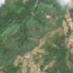
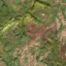

1,9 ha · Gârbovățu de Sus, com. Căzănești
văzută schimbată prima dată pe 7 sept. 2026


Autorizația cea mai apropiată nu acoperă tăierea: schimbarea cade în afara parcelei autorizate.
APV 2400188002750 · Ocolul Silvic Corcova, la 96 m
Terenul: pădure de stat, după amenajamentul silvic publicat.
Ce se vede în poze: În poza detaliată zona marcată era acoperită de pădure deasă. În poza «după» aceeași zonă este maro, fără copaci, iar pădurea din jur a rămas verde, deci probabil copacii au fost tăiați.